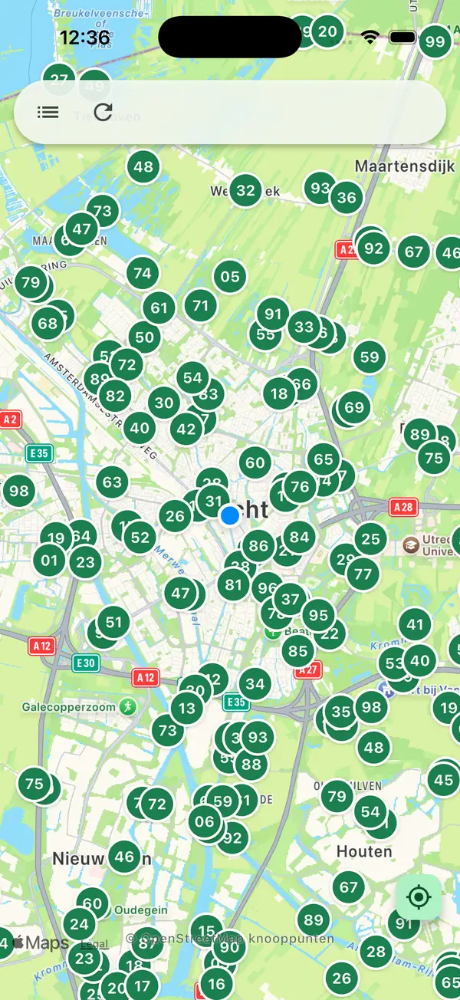

Cycling app for iPhone, Apple Watch and Android
Cycle junctions. Less fuss.
Loops, junctions and café stops along the way.
Pick a loop, hop on and ride. Fietsert shows the next junction number big and clear, on your iPhone and on your Apple Watch, finds a café along your route and handles the rest. So a day on the bike feels like a proper day out.
The whole junction network is free to use.

Why Fietsert
You enjoy the ride. The app does the thinking.
No map on the handlebars, no list of numbers scribbled on your hand. Four things that simply make a day of cycling nicer.
Junction to junctionThe next junction, big and clear.
Fietsert shows the next junction number in large type, with the distance and an arrow pointing the way. One glance is enough.
- Large junction number with distance and direction arrow
- Your next junction live on your Lock Screen
- Less staring at your screen, more looking around
Something nice on the wayCoffee, lunch or a terrace on your route.
See which cafés and restaurants are near your route and plan your break where it suits you.
- Cafés and restaurants near your route
- Search by restaurant, address or junction number
- Handy for a coffee stop or lunch halfway
Loop or photo routePick a distance, or snap a photo.
Fancy 40 km? Fietsert automatically builds a loop of the distance you choose that brings you back where you started. Got a junction list or a leaflet? Snap a photo and it becomes a route.
- Automatic loop for the distance you choose
- The loop brings you back where you started
- A photo of a junction list or leaflet becomes a route
On your wristYour next junction on your Apple Watch.
Leave your iPhone in your bag. Open a saved route on your Apple Watch and ride by number: the next junction big on screen, with the distance and an arrow pointing the way.
- Next junction with distance and direction arrow, and the numbers that follow
- Your saved routes reach your Watch via iCloud, with your route on the map
- Works without your iPhone nearby, once your routes have synced
And also
Everything you’d expect, without the clutter.
Save and share routes
Keep your favourite loops and send them to whoever’s riding with you.
iCloud sync
Your routes on all your Apple devices, through your own iCloud.
Apple Health
Save your ride as a cycling workout in Apple Health, if you want to.
No ads
No banners, no pop-ups. Just you and the route.
No third-party tracking
No analytics or advertising companies looking over your shoulder.
Free: plan and ride the whole junction network of the Netherlands, Flanders, Lower Saxony and North Rhine-Westphalia. No town to choose.
Also from AppertLabs
Streamert
Internet radio for iPhone, Apple TV and Android. Curated radio stations, played directly: no ads in the app and no account.